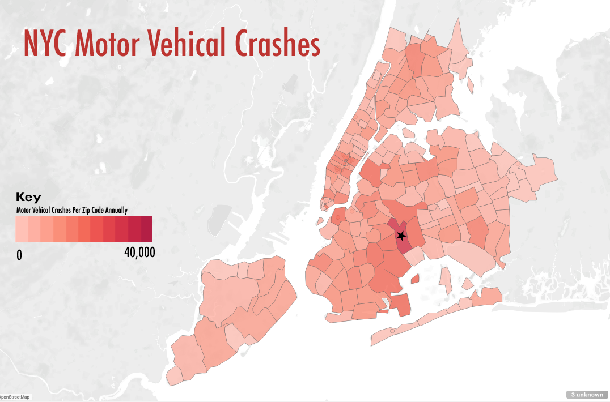

In my project I created a heat map of the density of car crashes in NYC. For this heat map I used a sequential light red to dark red color gradient to represent the density of crashes per zip code. To enhance the map I created, I added a key showing the density of crashes per color ranging from zero to forty-thousand crashes per zip code. I also added a star on the map to represent the zip code that accumulated the highest amount of car crashes. Following Gestalt principles I grouped all regions on the heat map per geographic zip code, allowing easy comparison to other regions in the United States. I also used a consistent color gradient where crash density grew as the color got darker.
